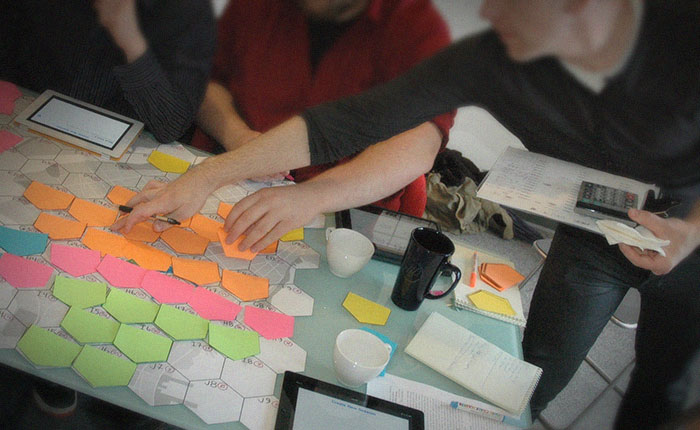
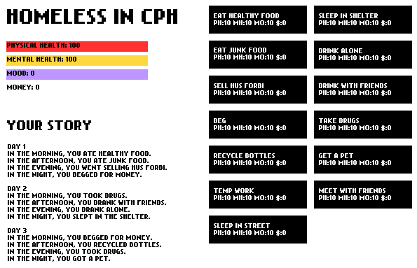

Prototipagem
O que é um protótipo?
Protótipos são como os rascunhos de um desenho, ou seja, são formas de tornar concretas diferentes decisões de design de um jogo. Todo protótipo tem uma questão central que pretende responder: o bom protótipo age como um filtro, que inclui em sua formulação os aspectos necessários para responder a pergunta a que se propõe. Protótipos sem perguntas claras são meros experimentos, o que pode ser útil, mas tende a ser ineficiente.
A criação de protótipos é um processo rápido e que tende a enfatizar produtos descartáveis e efêmeros. Novamente traçando um paralelo com rascunhos, o protótipo não tem que ser bem acabado ou bem apresentado, contanto que responda as perguntas propostas. De certa forma, é importante que o protótipo seja descartável, já que muitas vezes é criado num contexto de pressa: sendo descartável, fica mais fácil recomeçar a implementação sob bases sólidas, agora que o caminho está traçado.
É importante fazer protótipos de forma barata pois eles serão descartados para a elaboração da versão final posteriormente. Isso é mais claro quando estamos criando protótipos analógicos, mas também vale para protótipos digitais. Construir seu jogo em torno de um protótipo não é uma boa ideia pois normalmente eles não estão construídos da forma mais sólida ou com melhor estrutura, o que vai atrapalhar o projeto no futuro. Por isso, muitas equipes criam protótipos em linguagens diferentes que a do produto final.
Que tipo de questões protótipos devem responder?
- Centrais. É comum a criação de protótipos que demonstrem aspectos que se repetem constantemente ou que são a base sob a qual o jogo será constrído. Exemplos: mecânicas principais, como movimento, pulo, ataque.
- Arriscadas / caras. Se um jogo se arrisca, por exemplo, decidindo trabalhar com técnicas ou conteúdos caros ou arriscadoos. É importante testar logo se essas decisões funcionam como desejado antes de investir completamente. Exemplo: animação stop-motion (que é cara, mas tem um visual diferente) para o combate entre personagens.
- Únicas. Se um jogo tem características únicas, é importante concretizá-las o quanto antes, para saber o impacto que tem no jogo. Exemplo: o jogo é todo renderizado em caracteres ASCII, será que fica legível?
Prototipagem analógica
Em alguns casos, é possível testar e desenvolver sistemas e aspectos de um videogame sem trabalhar com o formato digital. Por exemplo, para equilibrar ou planejar um sistema de inventário ou combate por turno é bastante viável criar um protótipo em papel, como se fosse um jogo analógico utilizando regras e materiais de jogos de tabuleiro e cartas.

Protótipo analógico de WhereWars
Esse tipo de protótipo é barato e rápido de desenvolver, além de ser acessível, o que permite toda a equipe alterar e dar input nas ideias do jogo. Pode tanto simular o jogo como um todo quanto ser apenas uma fatia horizontal. É importante pensar aqui as diferentes formas que se pode simular características do design de jogos digitais de forma analógica, como o tempo de turnos e a simulação do computador. Por isso, muitos protótipos analógicos usam um jogador como mestre para substituir o computador.
Protótipos em papel podem servir como uma forma menos intimidadora de colher opiniões com usuários que não são acostumados com tecnologia ou inexperientes. Para criar bons protótipos em papel, é importante ter um repertório de jogos de tabuleiro e cartas e lembrar-se que o papel é bom em reproduzir momentos discretos, mas ruim em mostrar a experiência do jogo “em tempo real”.

Protótipo analógico de serious games para celular sobre pessoas morando na rua em Copenhague.
Prototipagem digital
Quando criamos um protótipo digital, é fundamental mantermos o custo e complexidade do mesmo no nível mínimo necessário. A tendência a deixar um protótipo “crescer” é muito grande e uma forma de evitar isso é o uso de tecnologias diferentes da final. Também é comum utilizar imagens prontas e assets simples encontrados na internet, mas que serão retirados de versões que venham se tornar públicas.

Protótipo digital testando o equilíbrio do sistema do jogo Homeless in CPH.
Em protótipos digitais, devemos realizar perguntas que sejam dependentes das potencialidades do meio digital: animações, processamentos pesados, conectividade multiplayer e rankings, por exemplo. Mecânicas que exigem cálculos físicos em tempo real também podem ser testadas de forma rápida digitalmente.
Por onde começar um protótipo? Essa é uma das questões mais importantes na hora de organizar. Como via de regra, começar daquilo que o jogador mais irá fazer, ou seja, as regras que regem os sistemas mais centrais do jogo é um bom começo. Nesse tipo de protótipo surgem os problemas mais críticos a serem tratados. Depois, pode-se elaborar melhor as etapas mais periféricas em relação a esse núcleo já bem estruturado. Para ajudar, podemos pensar nos conceitos de fatias verticais e horizontais.
Como ‘fatiar’ um protótipo?
Se pensarmos no jogo completo como uma tabela como a abaixo (hipotética), fica fácil de entender os conceitos de fatia vertical e horizontal. O jogo só está pronto quando todos os itens estão em 100% de desenvolvimento. Durante a produção, essa tabela pode ter diferentes elementos em estágios diferentes.
| Fase 1 | Fase 2 | Fase 3 | Fase 4 |
|---|---|---|---|
| Mecânicas | Mecânicas | Mecânicas | Mecânicas |
| Arte visual estática | Arte visual estática | Arte visual estática | Arte visual estática |
| Animações | Animações | Animações | Animações |
| SFX | SFX | SFX | SFX |
| Música | Música | Música | Música |
| Savepoints | Savepoints | Savepoints | Savepoints |
Fatias verticais
São versões que mostram a interação entre diferentes sistemas do jogo, agrupando-as de forma que faz sentido como um todo autônomo. O exemplo mais comum é o de fases ou níveis do jogo que são criadas de forma ter uma demonstração do todo do jogo, uma percepção holística. Normalmente são criadas em etapas mais avançadas de produção ou de forma incompleta no início do processo (com cada sistema em uma forma parcial ao invés de total), para ter uma visão do conjunto do jogo.
Fatias horizontais
São versões focadas em demonstrar a funcionalidade completa de um determinado sistema do jogo. Um exemplo seria criar um build com todo o sistema de inventário ou o sistema multi-jogador funcional, mesmo que sem a arte final do jogo. Esse tipo de protótipo é bastante utilizado durante toda a produção do jogo, como forma de validar decisões de design e implementação. É interessante também por permitir que várias áreas do jogo sejam desenvolvidas e amadurecidas em paralelo.